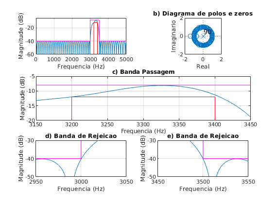
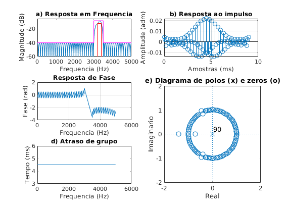

Contents
close all;
clear all;
clc;
ExecutarAjuste = 1;
Especificacoes
Ap = 2; As = 30; GdB = -10;
fa = 10000;
fp1 = 3200; fp2 = 3400;
fs1 = 3000; fs2 = 3500;
fcuts = [fs1 fp1 fp2 fs2];
w = fcuts/fa*(2*pi);
ws1 = w(1)/pi; wp1 = w(2)/pi; wp2 = w(3)/pi; ws2 = w(4)/pi;
mags = [0 1 0];
devs_As = 10^(-(As+1.6)/20);
devs_Ap = 1-10^(-Ap/20);
devs = [devs_As devs_Ap devs_As];
G0 = GdB;
if ExecutarAjuste
fcuts = fcuts + [0 -15 10 0];
end
[n,f0,a0,w0] = firpmord(fcuts,mags,devs,fa);
h_pm = firpm(n,f0,a0,w0);
h_pm = h_pm*10^(G0/20);
figure(1)
subplot(321)
title('a) Resposta em Frequencia')
[h, w] = freqz(h_pm, 1, linspace(0,pi,100000));
plot(w*fa/2/pi,20*log10(abs(h))); grid on;
xlim([0 fa/2]);ylim([-60 -5]);
hold on;
Amin = 80;
As = As - G0;
Ap = Ap + G0;
plot([wp1, wp1, wp2, wp2]*fa/2, [-Amin, Ap-4, Ap-4, -Amin], '-r')
plot([0, ws1, ws1, ws2, ws2, 1]*fa/2, [-As, -As, Ap, Ap, -As,-As], '-m')
xlabel('Frequencia (Hz)');
ylabel('Magnitude (dB)');
subplot(322)
zplane(h_pm, 1); axis([-2 2 -2 2]);
title('b) Diagrama de polos e zeros')
xlabel('Real');
ylabel('Imaginario');
subplot(3,2,3:4)
plot(w*fa/2/pi,20*log10(abs(h))); grid on;
title('c) Banda Passagem')
grid on; hold on;
plot([wp1, wp1, wp2, wp2]*fa/2, [-Amin, Ap-4, Ap-4, -Amin], '-r')
plot([0, ws1, ws1, ws2, ws2, 1]*fa/2, [-As, -As, Ap, Ap, -As,-As], '-m')
xlim([3150 3450]); ylim([-20 -5]);
xlabel('Frequencia (Hz)');
ylabel('Magnitude (dB)');
subplot(3,2,5)
plot(w*fa/2/pi,20*log10(abs(h))); grid on;
title('d) Banda de Rejeicao')
grid on; hold on;
plot([wp1, wp1, wp2, wp2]*fa/2, [-Amin, Ap-4, Ap-4, -Amin], '-r')
plot([0, ws1, ws1, ws2, ws2, 1]*fa/2, [-As, -As, Ap, Ap, -As,-As], '-m')
xlim([2950 3050]); ylim([-50 -30]);
xlabel('Frequencia (Hz)');
ylabel('Magnitude (dB)');
subplot(3,2,6)
plot(w*fa/2/pi,20*log10(abs(h))); grid on;
title('e) Banda de Rejeicao')
grid on; hold on;
plot([wp1, wp1, wp2, wp2]*fa/2, [-Amin, Ap-4, Ap-4, -Amin], '-r')
plot([0, ws1, ws1, ws2, ws2, 1]*fa/2, [-As, -As, Ap, Ap, -As,-As], '-m')
xlim([3450 3550]); ylim([-50 -30]);
xlabel('Frequencia (Hz)');
ylabel('Magnitude (dB)');

figure(2)
escala = fa/2;
subplot(3,2,[4 6])
zplane(h_pm, 1);
axis([-2 2 -2 2])
title('e) Diagrama de polos (x) e zeros (o)')
xlabel('Real');
ylabel('Imaginario');
clear h w
[h, w] = freqz(h_pm, 1, 'whole');
subplot(322)
x_imp = [0:length(h_pm)-1]/fa*1000;
stem(x_imp, h_pm); grid on;
title('b) Resposta ao impulso')
xlabel('Amostras (ms)');
ylabel('Amplitude (adm)');
subplot(321)
[h, w] = freqz(h_pm, 1, linspace(0,pi,10000));
plot(w*fa/2/pi,20*log10(abs(h)))
hold on;
title('a) Resposta em Frequencia')
ylim([-60 -5])
Amin = 80;
plot([wp1, wp1, wp2, wp2]*fa/2, [-Amin, Ap-4, Ap-4, -Amin], '-r')
plot([0, ws1, ws1, ws2, ws2, 1]*fa/2, [-As, -As, Ap, Ap, -As,-As], '-m')
xlim([0 fa/2])
xlabel('Frequencia (Hz)');
ylabel('Magnitude (dB)');
subplot(323)
plot(w/pi*escala, unwrap(angle(h))/pi); grid on;
title('Resposta de Fase')
xlabel('Frequencia (Hz)');
ylabel('Fase (rad)');
subplot(325)
[del_y, del_x] = grpdelay(h_pm, 1);
plot(del_x/pi*fa/2, del_y/fa*1000);
title('d) Atraso de grupo')
xlabel('Frequencia (Hz)');
ylabel('Tempo (ms)');
